Observações:
EXPLORANDO MAIS SOBRE OUTRAS:
Rede de força:
Uma Rede de Força é construída com o mesmo princípio de uma Cadeia de Força, mas como uma rede e não como uma cadeia (veja Cadeias versus Redes). Elas são um verdadeiro método de "último recurso" e só podem ser encontradas manualmente por jogadores muito experientes (as imagens abaixo falam por si).
Notação: Os ramos da rede são colocados entre parênteses. Seu resultado é usado posteriormente na rede.


 O exemplo é uma veracidade que prova que r1c2 tem que ser 5.
Veracidade da Rede Forçada => r1c2=5
r7c2=6 (r4c2=7 r5c3<>7) (r3c2<>6) r9c5=6 (r9c5<>9) (r9c5<>9) r3c3=6 (r5c3=2 r8c3<>2) (r1c1=7 r9c1=2 r8c2=5 r8c3=9 r8c8=8 r7c9<>8) r9c3=7 r9c4=9 r3c4=4 r5c2=4 r5c9=1 r6c9=8 r8c5=8 r8c6=1 r1c6=6 r2c6=4 r3c4=9 r9c3=9 r8c3=5 r1c2=5
r7c2=7 (r7c2<>6) (r4c2=6 r3c2<>6) (r7c8<>7) (r7c7<>7) r9c9=7 (r3c3=7 r9c3=6 r9c1<>6) (r3c3=7 r3c3<>6) (r9c9<>2) r8c7=4 r8c8=2 r2c8=6 (r1c7<>6) r1c1=6 r2c8=6 (r1c7<>6) r2c1=2 r9c1=7 r7c2=9 (r1c2<>9) r1c3=9 r1c2=5
r7c2=9 (r1c2<>9) r1c3=9 r1c2=5
Significado: A célula r7c2 tem três possibilidades restantes: 6, 7 e 9. Independentemente do dígito que for colocado em r7c2, r1c2 será sempre 5.
Vamos estudar a última (e mais simples) rede. Se ignorarmos os parênteses, podemos acompanhar a cadeia facilmente: Se r7c2 for 9, r3c2 não pode ser 9. Aqui estamos presos. Não podemos continuar, porque 9 em r3c2 e r1c3 estão apenas fracamente ligados (9 adicional em r1c2). Felizmente, 9 em r1c2 também não pode ser verdade se r7c2 for 9 (o ramo da rede), transformando assim o elo fraco em um elo forte.
Os ramos nas outras redes não são tão fáceis de explicar. Tente decifrá-los você mesmo.
O exemplo é uma veracidade que prova que r1c2 tem que ser 5.
Veracidade da Rede Forçada => r1c2=5
r7c2=6 (r4c2=7 r5c3<>7) (r3c2<>6) r9c5=6 (r9c5<>9) (r9c5<>9) r3c3=6 (r5c3=2 r8c3<>2) (r1c1=7 r9c1=2 r8c2=5 r8c3=9 r8c8=8 r7c9<>8) r9c3=7 r9c4=9 r3c4=4 r5c2=4 r5c9=1 r6c9=8 r8c5=8 r8c6=1 r1c6=6 r2c6=4 r3c4=9 r9c3=9 r8c3=5 r1c2=5
r7c2=7 (r7c2<>6) (r4c2=6 r3c2<>6) (r7c8<>7) (r7c7<>7) r9c9=7 (r3c3=7 r9c3=6 r9c1<>6) (r3c3=7 r3c3<>6) (r9c9<>2) r8c7=4 r8c8=2 r2c8=6 (r1c7<>6) r1c1=6 r2c8=6 (r1c7<>6) r2c1=2 r9c1=7 r7c2=9 (r1c2<>9) r1c3=9 r1c2=5
r7c2=9 (r1c2<>9) r1c3=9 r1c2=5
Significado: A célula r7c2 tem três possibilidades restantes: 6, 7 e 9. Independentemente do dígito que for colocado em r7c2, r1c2 será sempre 5.
Vamos estudar a última (e mais simples) rede. Se ignorarmos os parênteses, podemos acompanhar a cadeia facilmente: Se r7c2 for 9, r3c2 não pode ser 9. Aqui estamos presos. Não podemos continuar, porque 9 em r3c2 e r1c3 estão apenas fracamente ligados (9 adicional em r1c2). Felizmente, 9 em r1c2 também não pode ser verdade se r7c2 for 9 (o ramo da rede), transformando assim o elo fraco em um elo forte.
Os ramos nas outras redes não são tão fáceis de explicar. Tente decifrá-los você mesmo.
Peixe Kraken
Um Peixe Kraken é a combinação de um peixe com uma ou mais cadeias. Geralmente utiliza Peixes com Barbatanas, que não fornecem eliminações, pois as possíveis eliminações não conseguem ver todas as barbatanas (veja Geral sobre Peixes).
Peixe Kraken Tipo 1
Em um peixe com barbatanas, uma possível eliminação se torna uma eliminação real se todas as barbatanas forem visíveis. Na maioria das vezes, isso não acontece, e obtemos um peixe com barbatanas inútil, sem eliminações. Um Peixe Kraken pode extrair uma eliminação de um peixe assim usando cadeias.
A premissa para um peixe com barbatanas era: se todas as barbatanas forem falsas, todas as possíveis eliminações se tornam válidas. Mas se uma barbatana for verdadeira, o peixe é destruído e a posição elimina todos os candidatos do dígito do peixe entre os pares da barbatana.
Em um Peixe Kraken, esse princípio é simplesmente aprimorado: se pudermos provar que uma possível eliminação deve ser falsa para todas as possíveis barbatanas, podemos eliminar esse candidato. A prova usa cadeias que começam com um elo fraco em cada barbatana e terminam em um elo fraco na possível eliminação.

 O exemplo é do mesmo estado do Sudoku em que a Rede de Forças do exemplo acima foi necessária. A base é um X-Wing Frankenstein com aletas: 2 r6b2 c57 fr6c2 fr6c9. As possíveis eliminações são r158c7 (nenhuma delas vê ambas as aletas).
A imagem à esquerda mostra a primeira cadeia conectando a aleta r6c2 a r8c7: r6c2 -2- ALS:r4c2,r5c13 -4- r2c1 =4= r2c6 -4- r8c6 =4= r8c7. A imagem à direita mostra a segunda cadeia para a segunda aleta (r6c9): r6c9 -2- ALS:r13479c9 -8- ALS:r8c238 -2- r8c7.
Significado:
Se ambas as barbatanas forem falsas, o peixe é verdadeiro e r1c7, r5c7 e r8c7 podem ser eliminados.
Se a barbatana r6c2 for verdadeira, 2 pode ser eliminado de r8c7, como comprovado pela primeira cadeia.
Se a barbatana r6c9 for verdadeira, 2 pode ser eliminado de r8c7, como comprovado pela segunda cadeia.
Esta é uma veracidade típica.
O exemplo é do mesmo estado do Sudoku em que a Rede de Forças do exemplo acima foi necessária. A base é um X-Wing Frankenstein com aletas: 2 r6b2 c57 fr6c2 fr6c9. As possíveis eliminações são r158c7 (nenhuma delas vê ambas as aletas).
A imagem à esquerda mostra a primeira cadeia conectando a aleta r6c2 a r8c7: r6c2 -2- ALS:r4c2,r5c13 -4- r2c1 =4= r2c6 -4- r8c6 =4= r8c7. A imagem à direita mostra a segunda cadeia para a segunda aleta (r6c9): r6c9 -2- ALS:r13479c9 -8- ALS:r8c238 -2- r8c7.
Significado:
Se ambas as barbatanas forem falsas, o peixe é verdadeiro e r1c7, r5c7 e r8c7 podem ser eliminados.
Se a barbatana r6c2 for verdadeira, 2 pode ser eliminado de r8c7, como comprovado pela primeira cadeia.
Se a barbatana r6c9 for verdadeira, 2 pode ser eliminado de r8c7, como comprovado pela segunda cadeia.
Esta é uma veracidade típica.
Peixe Kraken Tipo 2
O tipo 2 é um pouco mais complexo que o tipo 1. Vamos revisar o que é um peixe: ele garante que exatamente um candidato a base seja verdadeiro em todos os conjuntos de cobertura.
Se pudermos construir cadeias, começando com um elo fraco cada, a partir de cada candidato a base em um dos conjuntos de cobertura, mais a partir de cada barbatana (se presente), que levem à mesma conclusão, temos uma veracidade de Cadeia de Força.


 O exemplo mostra um Kraken Fish baseado em um Sashimi X-Wing: 4 r15 c12 fr1c7 fr1c9. O que é bom para nós é que a coluna 2 do conjunto de cobertura tem apenas um candidato base (r5c2). Os outros 4 nessa coluna (r3c2) são candidatos a cobertura e não nos interessam agora. Podemos construir as seguintes cadeias:
r1c7 -4- r8c7 -2- ALS:r4c789,r56c7 -7- r5c9
r1c9 -4- ALS:r39c9 -7- r5c9
r5c2 =1= r5c9
Juntas, elas provam que r5c9 não pode ser 7.
O exemplo mostra um Kraken Fish baseado em um Sashimi X-Wing: 4 r15 c12 fr1c7 fr1c9. O que é bom para nós é que a coluna 2 do conjunto de cobertura tem apenas um candidato base (r5c2). Os outros 4 nessa coluna (r3c2) são candidatos a cobertura e não nos interessam agora. Podemos construir as seguintes cadeias:
r1c7 -4- r8c7 -2- ALS:r4c789,r56c7 -7- r5c9
r1c9 -4- ALS:r39c9 -7- r5c9
r5c2 =1= r5c9
Juntas, elas provam que r5c9 não pode ser 7.
Força Bruta:
A força bruta não é exatamente uma técnica: basta inserir um dígito em uma célula e verificar se você obtém uma solução ou não. Se essa técnica estiver habilitada, qualquer Sudoku pode ser resolvido.
Cadeias XY, Loops e Conjuntos Quase Travados:
Pares Remotos
Pares remotos são formados por vários pares isolados ligados para formar cadeias de um número par de células bivaloradas. A cadeia deve ter comprimento par para permitir eliminações: 2, 4, 6... células. Podemos então remover ambas as possibilidades isoladas de todos os pares das células terminais da cadeia de comprimento par. Cadeias longas podem permitir várias eliminações simultâneas, encurtando-as, desde que as subcadeias tenham comprimento par. Pode haver várias dessas cadeias formando uma árvore ou um aglomerado, permitindo ainda mais eliminações.
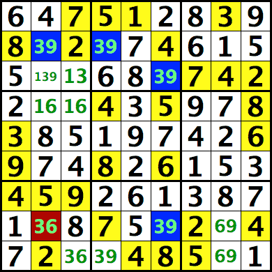
As células R2C2, R2C4, R3C6 e R8C6 formam uma cadeia de 4 células com {39}. Conclui-se que R2C2 e R8C6 contêm [39] ou [93]. Seja qual for o caso, R8C2 não pode conter 3 (nem 9), pois é vizinha de ambas as células.
Observe que a cadeia contém 4 células, um número par. Não podemos eliminar nenhuma célula em cadeias com um número ímpar de células. No exemplo acima, R2C2, R2C4 e R3C6 não permitem nenhuma eliminação para R3C2, pois ela contém 3 células e não forma um par remoto.
Isso forma uma Cadeia de Inferência Alternada (AIC) de células bivaloradas, um caso particular de Cadeia XY com apenas dois candidatos. Isso também pode ser visto como duas Cadeias X para ambos os candidatos. O exemplo acima forma um padrão de pipa de duas cordas para 3 e também um padrão de pipa de duas cordas inútil para 9. O JSudoku não usa o Critério de Informação de Ação (AIC) para pares remotos, mas sim coloração simples para formar agrupamentos, o que permite a eliminação em várias células simultaneamente.
Aqui está outro exemplo de um agrupamento de pares remotos em {26} que permite várias eliminações simultâneas:
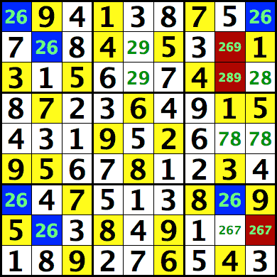
R23C8, R8C9<>{26} porque existem várias cadeias de comprimento par:
Semelhante a um arranha-céu: R1C9-R1C1-R7C1-R7C8 -> R23C8, R8C9<>{26}
Semelhante a uma pipa de duas cordas: R1C9-R1C1-R2C2-R8C2 -> R8C9<>{26}
Semelhante a uma pipa de duas cordas: R2C2-R8C2-R7C1-R7C8 -> R2C8<>{26}
Cadeia XY e Loop:
Uma cadeia XY conecta várias células bivaloradas (com duas possibilidades). A asa XY pode ser vista como uma cadeia XY com 3 células. Ela pode ser expressa usando as inferências fortes e fracas conhecidas como Cadeia de Inferência Alternada (AIC). Isso é similar em lógica ao Turbot Fish e à cadeia X, mas aqui as inferências fortes são células bivaloradas em vez de conexões fortes de duas localizações. As conexões fracas são quaisquer linhas, colunas, nonetos...
Como introdução, aqui está um exemplo da asa XY expressa usando AIC:
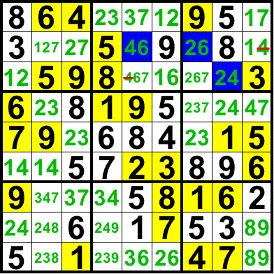
R2C5 tem forte inferência entre os dois candidatos {46}: deve conter um de 4 ou 6. Da mesma forma, R2C7 tem forte inferência em {26} e R3C8 em {24}. R2 estabelece uma ligação fraca entre as duas células R2C57 para o candidato 6 (elas não podem conter 6 ambas) e N3 estabelece uma ligação fraca entre R2C7 e R3C8 para o candidato 2. Isso forma um AIC:
(4=6)R2C5-(6=2)R2C7-(2=4)R3C8 -> R2C9,R3C5<>4
Aqui está um exemplo de uma cadeia XY em 8 com 5 células:
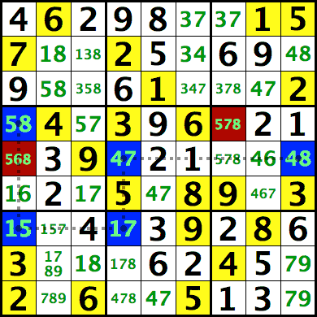
(8=5)r4c1-(5=1)r7c1-(1=7)r7c4-(7=4)r5c4-(4=8)r5c9 -> r4c7,r5c1<>8
Uma cadeia XY pode formar um laço ou ciclo contínuo onde cada célula bivalorada (elo forte) da cadeia está fracamente ligada à próxima e à anterior por meio de alguma linha, coluna, bloco... Cada um dos elos fracos deve então se tornar um elo forte, o que permite muito mais eliminações. Isso é semelhante em lógica ao X-Wing Generalizado, exceto que os elos fortes são células bivaloradas em vez de pares conjugados de bilocalização. O caso mais simples de um laço XY seria um par nu formado por duas células bivaloradas (elos fortes), ligadas entre si por meio de uma casa (dois elos fracos para os dois candidatos). Por exemplo, podemos escrever um par nu em {12} em R1C34 usando AIC, onde os links fracos são 1 para R1 e 2 para R1:
...(1=2)r1c3-(2=1)r1c4... -> 1 bloqueado em r1c34 para r1, 2 bloqueado em r1c34 para r1
Aqui está um exemplo de um laço XY com 4 células:
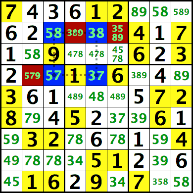
...(7=3)r4c5-(3=8)r2c5-(8=5)r2c3-(5=7)r4c3... -> 7 bloqueado em r4c35 para r4, 8 bloqueado em r2c35 para r2
Observe que isso também bloqueia 3 em r24c5 para c5 e 5 em r24c2 para c2, o que já era o caso.
Cadeia e laço XY-X:
Este solucionador combina uma mistura de células bivaloradas com ligações fortes bilocalizadas. O padrão Y-Wing também pode ser visto como uma cadeia XY-X com duas células bivaloradas e uma ligação forte bilocalizada:
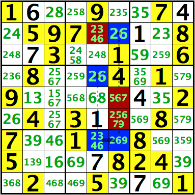
(6=2)R2C6-(2)R7C6=(2)R7C5-(2=6)R4C5 -> R2C5,R56C6<>6
Este exemplo mostra uma cadeia XY-X em 6 com 2 células bivaloradas e 2 ligações fortes de bilocalização
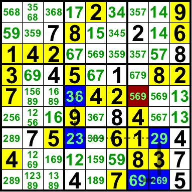
As duas ligações fortes de bilocalização são: 6 de R9 bloqueados em R9C78 e 2 de C8 bloqueados em R79C8. Essas duas ligações fortes são fracamente ligadas através da célula em R9C8, já que ela não pode conter um 6 e um 2 simultaneamente. A cadeia continua através da ligação fraca em R7 até a célula bivalorada R7C4={23} e, em seguida, através da ligação fraca em C4 até a célula bivalorada R5C4={36}. Seguindo o AIC, vemos que ou R9C7=6 ou R5C4=6 e, portanto, R5C7 não pode conter um 6 (nem R9C4):
(6)R9C7=(6)R9C8-(2)R9C8=(2)R7C8-(2=3)R7C4-(3=6)R5C4 -> R5C7<>6
A cadeia não precisa terminar com nós para o mesmo candidato. Isso pode permitir a eliminação do candidato oposto para os nós terminais, desde que ambas as células terminais compartilhem alguma ligação. De forma mais geral, podemos eliminar qualquer nó candidato para o qual existam ligações fracas com ambos os nós terminais da cadeia. Essas duas ligações fracas geralmente são omitidas no AIC, mas podem ser listadas explicitamente. Para a cadeia acima, o AIC completo fornece:
(6)R5C7-(6)R9C7=(6)R9C8-(2)R9C8=(2)R7C8-(2=3)R7C4-(3=6)R5C4-(6)R5C7 -> R5C7<>6
Aqui está uma cadeia XY-X onde os nós terminais contêm os candidatos 4 e 5 e são parceiros entre si:
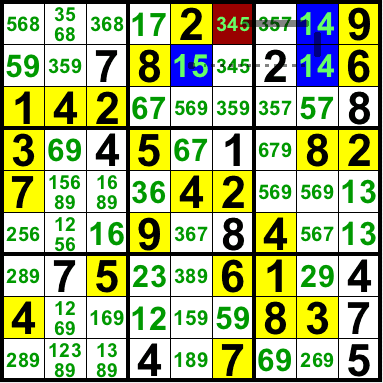
O AIC completo fornece:
(5)R1C6-(4)R1C6=(4)R1C8-(1)R1C8=(1)R2C8-(1=5)R2C5-(5)R1C6 -> R1C6<>5
Isso mostra que ou R1C6=4 ou R2C5=5. Seja qual for o caso, R1C6 não pode conter um 5 porque (5)R1C6 está fracamente ligado a (4)R1C6 (R1C6 não pode conter 4 e 5 simultaneamente) e a (5)R2C5 (N2 não pode conter dois 5s). Da mesma forma, R2C5 não poderia conter um 4.
A cadeia pode formar um laço ou ciclo contínuo, onde cada elo forte da cadeia está fracamente ligado ao próximo e ao anterior. Cada um dos elos fracos deve então se tornar um elo forte, o que permite muito mais eliminações. Isso é similar em lógica ao XY-Loop, X-Wing Generalizado, par nu ou oculto. Este exemplo mostra um laço XY-X com 3 células de dois valores e 3 ligações fortes de duas localizações:
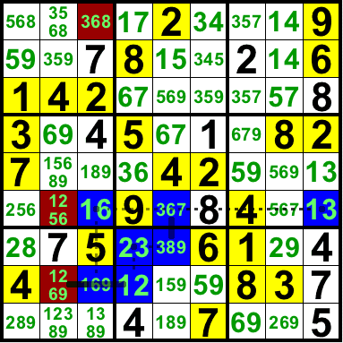
...(1=3)R6C9-(3)R6C5=(3)R7C5-(3=2)R7C4-(2)R8C4=(2-6)R8C2=(6)R8C3-(6=1)R6C3... -> 1 bloqueado em R6C39 para R6, R8C2={26}, 6 bloqueado em R68C3 para C3
Nota: O JSudoku primeiro procurará por loops, depois pelo caso em que os nós finais têm o mesmo candidato e, finalmente, pelo caso com candidatos diferentes.
Técnicas para Sudoku-X, Jigsaw, Windoku, Gatai...
Apontando Pares/Trios ... também conhecido como Eliminação Comum por Pares, Cruzamento Simples
Isso é semelhante à Interseção em algumas variantes. Neste Sudoku Diagonal, o 9 de D\ está bloqueado em R1C1,R4C4. Seja como for, R1C4 não pode ser 9 (nem R4C1).
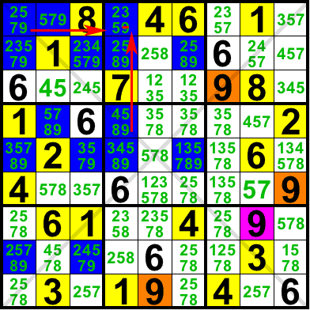
Aqui está um Triplo Apontador. Neste Sudoku Diagonal, o 4 de D\ está bloqueado em R1C1, R5C5, R9C9. Seja como for, R1C9 não pode ser 4 (nem R9C1).
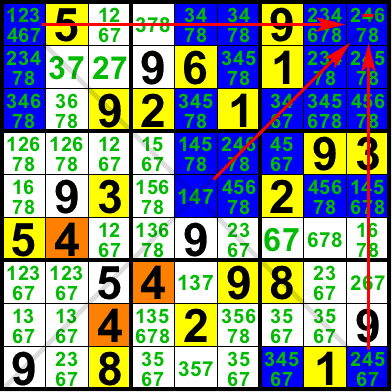
Subconjunto Nu Generalizado
Esta é uma generalização do Subconjunto Nu para algumas variantes como o Sudoku Diagonal. Neste Sudoku Diagonal, R1C19,R9C9 forma um tripleto nu generalizado em {678}, já que cada uma das três células é amiga das outras duas, como mostrado pelas linhas azuis: através de R1, C9 ou D. Como R9C1 é amiga de todas essas três células, como mostrado pelas setas vermelhas, ela não pode conter {678} (nem R5C5).
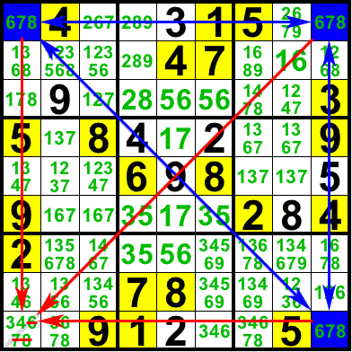
Lei das Sobras (LoL)
Esta é uma técnica para Jigsaw e outros tipos de grades com casas extras. Também é aplicável às Gaiolas 45/9 no Killer Sudoku.
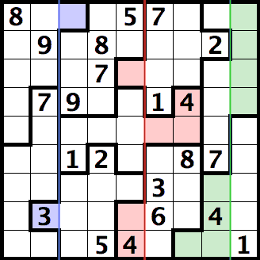
Considere as duas colunas à esquerda deste quebra-cabeça. Cada uma delas contém os dígitos de 1 a 9.
Agora, subtraia R8C2 e adicione R1C3.
Isso cobre os dois blocos/nonetos à esquerda, que também contêm os dígitos de 1 a 9.
Portanto, essas duas células devem ter o mesmo valor: R1C3 = 3
Isso também pode ser visto de forma semelhante aos blocos internos/externos do Killer Sudoku, considerando os blocos/nonetos como gaiolas de 9 células que somam 45:
Some todas as células nos dois blocos/nonetos. A soma é 2 * 45 = 90.
Subtraia todas as células em C12. A soma é 90 - 2*45 = 0.
R1C3 é uma célula externa (outies), R8C2 é uma célula interna (innies): R1C3 - R8C2 = 0 -> R1C3 = R8C2
Mesmo que não saibamos nenhum valor fixo para as células, podemos restringir suas possibilidades, já que elas devem ter o mesmo valor.
Por exemplo, se uma célula fosse {1234} e a outra fosse {3456}, podemos deduzir que cada uma delas é {34}:
A primeira célula não pode ser {12}, pois a segunda não pode ser {12}. A segunda célula não pode ser {56}, pois a primeira não pode ser {56}.
O conjunto de valores possíveis é, portanto, a interseção de todos os valores possíveis para cada metade.
Isso pode ser estendido para mais células.
Cada metade das 4 células em verde deve incluir o mesmo conjunto de 4 valores: {R1234C9} = {R789C8+R9C7}
Isso significa que o conjunto de 4 valores em R1234C9 deve ser igual ao conjunto de 4 valores em R789C8+R9C7
Podemos deduzir que deve haver um 4 em R1234C9, já que R8C8 = 4
Podemos também deduzir que nenhuma das células em verde pode ter {17}, já que {17} está excluído de pelo menos uma metade.
Isso pode ser usado em mais de dois blocos/nonetos.
Cada metade das células em vermelho deve incluir o mesmo conjunto de 3 valores: {R389C5} = {R4C7+C5C67}
Embora R3C5 e R89C5 estejam em blocos/nonetos diferentes, eles estão na mesma coluna; portanto, nenhum dígito pode ser repetido neles.
O 4 já está localizado em ambas as metades.
Podemos deduzir que as outras duas células em cada metade devem conter o mesmo conjunto (par) de valores: {R38C5} = {C5C67}
Como R38C5 não pode ter um 5, R5C67 também não pode ter um 5. O que revela que R5C3 = 5.
Como R5C67 não pode ter um 1, R38C5 também não pode ter um 1. O que revela que deve haver um 1 em uma das células de R27C5.
Aqui está um uso mais complexo do LoL, onde uma das metades contém células que não são pares entre si. Em outras palavras, onde os números geralmente se repetem.
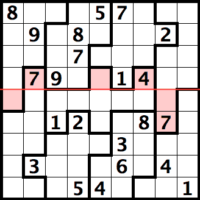
Neste exemplo, {R4C257} = {R5C1+R56C8}
Como nenhum número pode se repetir em {R4C257} -> nenhum número pode se repetir também em {R5C1+R56C8}, mesmo que R5C1 teoricamente pudesse ter o mesmo valor que R6C8.
De forma mais geral, toda inferência feita para uma metade é válida para a outra metade. Alguns exemplos: Se algum candidato para alguma casa estiver bloqueado em uma metade, ele também estará bloqueado na outra metade. Se uma metade forma um ALS, a outra metade também forma. Se uma metade de um quebra-cabeça assassino contém uma gaiola 5/2 = {14|23}, ela deve conter um dos {12}. O mesmo acontece com a outra metade do LoL. Esse tipo de vínculo não é detectado atualmente pelo JSudoku.
Célula Fixa (Oculta Única)
Estas são as células não resolvidas, que são os únicos lugares onde um determinado valor pode ser inserido em uma matriz: linha, coluna, noneto...
Neste exemplo, todas as células que podem conter o valor 2 estão destacadas. R5C4 é a única célula em N5 que pode conter o valor 2, portanto, ela é definida com esse valor. Observe que ela também é a única célula em C4. R7C8 é a única célula em N9 (e em R7) que pode conter o valor 2. Definir R7C8 como 2 impedirá que R23C8 também contenha o valor 2 e, consequentemente, revelará um valor 2 oculto em R3C7, já que esta se torna a única célula em R3 que pode conter o valor 2.
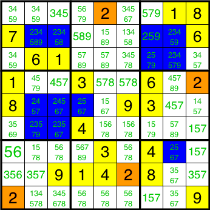
O registro listará os números ocultos como célula = valor (número oculto na casa).
Para este exemplo, isso resulta em R5C4 = 2 (número oculto em N5), o que significa que a célula na linha 5, coluna 4 está definida como 2, já que é a única célula onde um 2 pode entrar no noneto 5 (bloco central).
Você pode desativar esta mensagem desativando Opções > Registrar Números Ocultos.
A ordem de busca é baseada no número de células para cada possibilidade: da menor para a maior. Quando houver apenas uma célula restante em toda a grade para alguma possibilidade, ela será o Último Dígito e sempre será capturada primeiro.
Quando o solucionador encontrar um número oculto para algum valor, ele definirá seu valor e buscará repetidamente outros números ocultos para esse valor. No exemplo acima, ele definirá R5C4 = 2, R7C8 = 2, o que revela R3C7 = 2. Isso deve, de alguma forma, imitar o caminho típico percorrido por um humano para resolver quebra-cabeças fáceis, concentrando-se em um dígito antes de mudar para outro.
Solteira Nua, também conhecida como Mudança Forçada
Estas são as células não resolvidas com uma única possibilidade ou candidato.
Isso é fácil de identificar quando as marcas de lápis são exibidas: há apenas um número grande em verde na célula.
Neste exemplo, R6C6 é forçado a 9, pois esse é o único valor possível. Todos os outros valores já estão presentes nas células vizinhas: R6, C6 ou N5. Da mesma forma, R8C8 é forçado a 6.
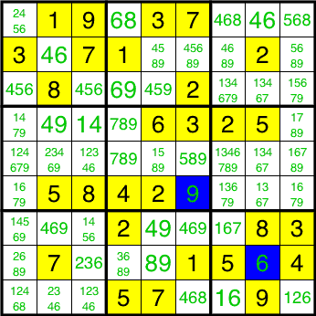
Remoção de interseções, também conhecido como interações de bloco linha-coluna, candidato bloqueado, apontamento, reivindicação...
Este solucionador buscará um valor fixo em uma mini-linha, mini-coluna ou mini-diagonal de um noneto e, consequentemente, não poderá estar no restante da linha, coluna, noneto ou diagonal.
Neste primeiro exemplo, todas as células que podem conter o valor 3 estão destacadas. O 3 de N8 deve estar em algum lugar em R7C45. Embora ainda não saibamos qual das duas células conterá o 3, sabemos que ele deve estar na mini-linha na interseção de R7 e N8: R7C456. Como N8 deve conter um 3 nessas células, nenhuma outra célula de R7 pode conter um 3. Isso também pode ser deduzido de outra forma: todas as células de R9 que podem conter um 3 estão dentro de N9; portanto, nenhuma outra célula de N9 pode conter um 3. Seja qual for o método, R7C9 não pode conter o valor 3. Há outra interseção com C7 e N6. O 3 de N6 está bloqueado na mini-coluna R456C7, portanto nenhuma outra célula de C7 pode ter um 3, logo R9C7 não pode ser 3.
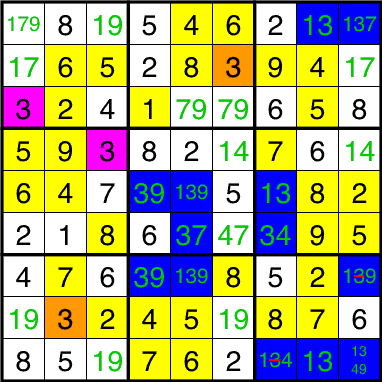
Aqui está outro exemplo, desta vez um Sudoku Diagonal onde todas as células que podem conter o número 5 estão destacadas. O 5 da célula D/ está fixo em N3. Portanto, nenhuma outra célula de N3 pode conter o número 5, e R3C9 não pode ser 5.
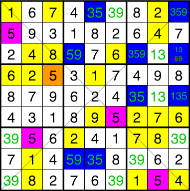
O registro listará a interseção como X da casa A bloqueada na casa B -> não em nenhum outro lugar na casa B.
Para o primeiro exemplo, isso resulta em: 3 de N8 bloqueado em R7C45 -> não em nenhum outro lugar em R7.
O solucionador não para na primeira interseção útil encontrada, mas continua procurando por interseções mais eficientes. A eficiência compara os singles recém-ocultos ou nus revelados. Se nenhum single for revelado, a eficiência compara o número de possibilidades/candidatos removidos.
Pares nus, trios, quartetos, subconjuntos
Um par nu é formado por duas células em uma casa que pode ter apenas duas possibilidades. Uma casa pode ser uma linha, coluna, noneto (bloco)...
Neste exemplo, R1C12 forma um par nu em {12} dentro de R1. Ainda não sabemos qual célula terá qual valor, mas, seja qual for o caso, uma célula deve ter 1 e a outra 2. Portanto, nenhuma outra célula em R1 pode ter {12}. O mesmo se aplica a N1, já que as duas células também estão dentro de N1. O solucionador removerá de uma só vez as possibilidades {12} das outras células tanto para R1 quanto para N1.
 Um tripleto nu é formado por 3 células em uma casa que pode ter 3 possibilidades. Algumas células podem não ter uma possibilidade. Neste exemplo, R1C12+R2C1 forma um tripleto nu em {789} dentro de N1. Ainda não sabemos qual célula terá qual valor, mas, seja qual for o caso, uma célula deve ter 7, outra deve ter 8 e a terceira deve ter 9. Portanto, nenhuma outra célula em N1 pode ter {789}. Observe que o 7 está fixo em R1C12 e o 9 está fixo em R12C1. Isso pode ser deduzido posteriormente pelo solucionador de interseções.
Um tripleto nu é formado por 3 células em uma casa que pode ter 3 possibilidades. Algumas células podem não ter uma possibilidade. Neste exemplo, R1C12+R2C1 forma um tripleto nu em {789} dentro de N1. Ainda não sabemos qual célula terá qual valor, mas, seja qual for o caso, uma célula deve ter 7, outra deve ter 8 e a terceira deve ter 9. Portanto, nenhuma outra célula em N1 pode ter {789}. Observe que o 7 está fixo em R1C12 e o 9 está fixo em R12C1. Isso pode ser deduzido posteriormente pelo solucionador de interseções.
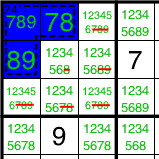
Isso pode ser estendido a um quádruplo nu: 4 células com 4 possibilidades. Ou, de forma mais geral, a um subconjunto nu: N células com N possibilidades.
O solucionador primeiro buscará pares nus, depois trios, quádruplos... Ele não para no primeiro subconjunto útil encontrado, mas continua buscando subconjuntos mais eficientes, porém não subconjuntos maiores. A eficiência compara os elementos únicos recém-ocultos ou nus revelados. Se nenhum elemento único for revelado, a eficiência compara o número de possibilidades/candidatos removidos.
O registro listará os subconjuntos nus à medida que as células formam um subconjunto nu em {...} dentro de uma casa. Removendo essas possibilidades das outras células das casas.
Para o primeiro exemplo, isso resulta em: R1C12 forma um par nu em {12} dentro de R1. Removendo essas possibilidades das outras células de R1, N1.
Pares ocultos, trios, quartetos, subconjuntos
Um par oculto é formado por duas células que são os únicos dois lugares onde duas possibilidades podem ser encontradas em uma casa: linha, coluna, noneto...
Neste exemplo, R12C8 forma um par oculto em {58} dentro de N3. Estas são as únicas duas células em N3 onde um 5 e um 8 podem ser encontrados. Ainda não sabemos qual valor irá para qual célula, mas, seja qual for o caso, o 5 de N3 deve ir para uma célula e o 8 de N3 para a outra. Portanto, as duas células não podem ter nenhum outro valor e suas possibilidades são limitadas a {58}.
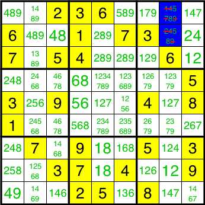
Isso pode ser estendido a trios, quádruplos... Quanto aos subconjuntos nus, nem todas as células precisam ter todos os valores do subconjunto oculto.
O solucionador primeiro buscará pares ocultos, depois trios, quádruplos... Ele não para no primeiro subconjunto útil encontrado, mas continua buscando subconjuntos mais eficientes, porém não subconjuntos maiores. A eficiência compara os novos elementos ocultos ou nus revelados. Se nenhum elemento for revelado, a eficiência compara o número de possibilidades/candidatos removidos.
Nota: Em uma casa que deve conter cada dígito uma vez: uma linha, coluna, noneto, diagonal... (mas não uma gaiola), um subconjunto oculto sempre terá um subconjunto nu de tamanho complementar e vice-versa. No exemplo acima, o par oculto em {58} tem um subconjunto nu complementar em {1234679} (com {36} já definido). Os solucionadores de subconjuntos não buscarão subconjuntos nus ou ocultos com mais elementos do que metade do tamanho da grade, pois sempre há um subconjunto complementar de tamanho menor. Para o Sudoku 3x3, isso se limita a quadras nuas e ocultas.
O registro listará os subconjuntos ocultos como células = {...} (subconjunto oculto na casa).
Para este exemplo, isso resulta em: R12C8 = {58} (par oculto em N3).
Ciclo suspeito
Um Ciclo de Peixe é um ciclo contínuo de candidatos para um único dígito. Ele alterna entre ligações fortes e fracas.
O Ciclo de Peixe foi introduzido inicialmente como uma generalização de padrões de peixe como X-Wing, Swordfish e Jellyfish, antes que esses padrões fossem vistos como conjuntos de restrições. Naquela época, os jogadores acreditavam que cada linha definidora deveria conter apenas 2 candidatos. Ainda existem alguns sites que mantêm essa antiga definição de Swordfish e Jellyfish.
Um exemplo pode ajudar a compreender o conceito:
------- ------- -------
| - X - | X - - | - - - |
| . : . | : . . | . . . |
| - : - | X - - | X - - |
------- ------- -------
| - X - | - X - | : - - |
| . . . | . : . | : . . |
| . . . | . : . | : . . |
------- ------- -------
| - - - | - X - | X - - |
| . . . | . . . | . . . |
| . . . | . . . | . . . |
------- ------- -------
As linhas 1, 3, 4 e 7 têm 2 candidatos cada. Um ciclo pode ser formado conectando esses candidatos usando as colunas. O ciclo resultante é:
r1c2 = r1c4 - r3c4 = r3c7 - r7c7 = r7c5 - r4c5 = r4c2 - r1c2
Este padrão é uma Água-viva. Podemos eliminar todos os candidatos restantes para este dígito das colunas 2, 4, 5 e 7.
Um Ciclo Água-viva não precisa ser restrito a linhas e colunas. As caixas também podem fornecer ligações fortes ou fracas. Aqui está outro exemplo:
------- ------- -------
| . . . | . . . | . . . |
| - X - | - X - | - - - |
| . : . | . : . | . . . |
------- ------- -------
| . : . | - - - | . . . |
| . : . | - X - | . . . |
| . : . | - - X | . . . |
------- ------- -------
| . : . | . . : | . . . |
| - X - | - - X | - - - |
| . . . | . . . | . . . |
------- ------- -------
Este ciclo utiliza 1 caixa e lê-se:
r2c2 = r2c5 - r5c5 = r6c6 - r8c6 = r8c2 - r2c2
Os candidatos restantes podem agora ser eliminados das colunas 2, 5 e 6.
Pares nus
Se duas células em uma região (linha, coluna ou quadrado) contêm exatamente os mesmos dois candidatos, então um desses candidatos é a solução para uma dessas células e o outro candidato é a solução para a outra célula.
Portanto, nenhum desses dois candidatos pode ser a solução em qualquer outra célula dessa região; esses dois candidatos podem ser removidos das outras células dessa região.
Pares Ocultos
Se dois candidatos puderem ser encontrados apenas nas mesmas duas células de uma região (linha, coluna ou quadrado), então um desses candidatos é a solução para uma dessas células e o outro candidato é a solução para a outra célula.
Portanto, todos os outros candidatos podem ser removidos dessas duas células.
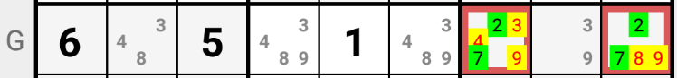
No exemplo acima, os candidatos 2 e 7 só são permitidos nas células G7 e G9 da linha "G". Se o candidato 2 for a solução em G7, então o candidato 7 deverá ser a solução em G9. Inversamente, se o candidato 2 for a solução em G9, então o candidato 7 deverá ser a solução em G7. Portanto, as células G7 e G9 devem ter 2 ou 7 como solução; todos os outros candidatos podem ser excluídos de G7 e G9.
Par Apontando
Se um candidato estiver presente em apenas duas células de um quadrado, então ele deve ser a solução para uma dessas duas células. Se essas duas células pertencerem à mesma linha ou coluna, então esse candidato não poderá ser a solução em nenhuma outra célula da mesma linha ou coluna, respectivamente.
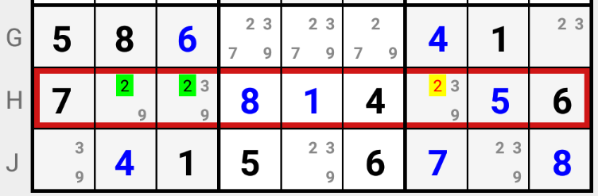
No exemplo acima, o candidato 2 deve ser a solução nas células H2 ou H3 do quadrado "7". Portanto, o candidato 2 não pode ser a solução em nenhuma outra célula da linha "H". O candidato 2 pode ser excluído de H6.
Apontando Triplo
Se um candidato estiver presente em apenas três células de um quadrado, então ele deve ser a solução para uma dessas três células. Se essas três células pertencerem à mesma linha ou coluna, então esse candidato não poderá ser a solução em nenhuma outra célula da mesma linha ou coluna, respectivamente.
 No exemplo acima, o candidato 8 deve ser a solução em A4, ou B4, ou C4 no quadrado "2". Portanto, não pode ser a solução em nenhuma outra célula da coluna "4".
No exemplo acima, o candidato 8 deve ser a solução em A4, ou B4, ou C4 no quadrado "2". Portanto, não pode ser a solução em nenhuma outra célula da coluna "4".
Quadríceps nus
Se quatro células em uma região (linha, coluna ou quadrado) contêm exatamente os mesmos quatro candidatos ou apenas subconjuntos desses quatro candidatos, então um desses candidatos é a solução para a primeira dessas células, um segundo é a solução para a segunda dessas células, um terceiro é a solução para a terceira dessas células e o último candidato é a solução para a quarta célula.
Portanto, nenhum desses quatro candidatos pode ser a solução em qualquer outra célula dessa região; esses quatro candidatos podem ser removidos das outras células dessa região.
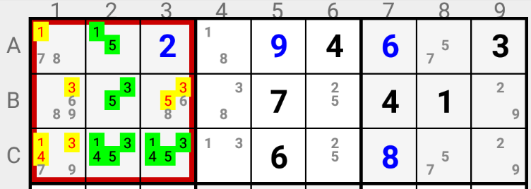
No exemplo acima, as células A2, B2, C2 e C3 formam um Quadrado Nu no Quadrado "1": quatro células com exatamente quatro candidatos possíveis. Cada um desses candidatos deve estar presente em uma dessas células. Portanto, 1 pode não ser a solução em A1 nem em C1; 3 pode não ser a solução em B1, B3 nem em C1; 4 pode não ser a solução em C1; finalmente, 5 pode não ser a solução em B3.
Quads ocultos
Se quatro candidatos puderem ser encontrados apenas nas mesmas quatro células de uma região (linha, coluna ou quadrado), então um desses candidatos é a solução para a primeira dessas células, um segundo é a solução para a segunda célula, um terceiro é a solução para a terceira célula e o último candidato é a solução para a quarta célula.
Portanto, todos os outros candidatos podem ser eliminados dessas quatro células.
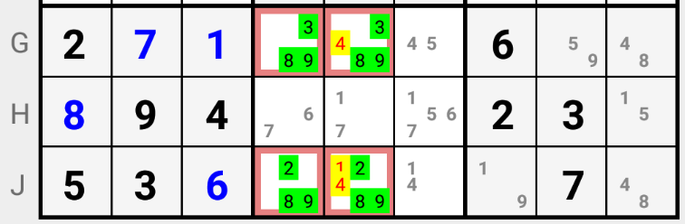
No exemplo acima, os candidatos 2, 3, 8 e 9 são permitidos apenas nas células G4, G5, J4 e J5 do quadrado "8". Quatro candidatos para quatro células; nenhum outro candidato é possível nessas células. O candidato 1 pode ser excluído de J5 e o candidato 4 de G5 e J5.